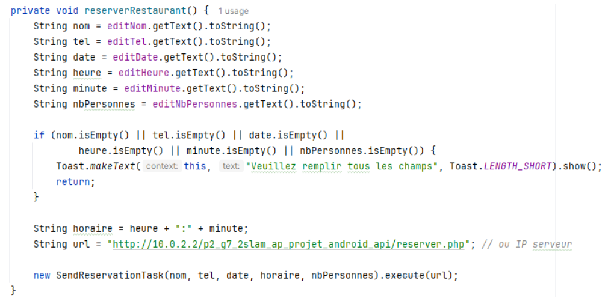
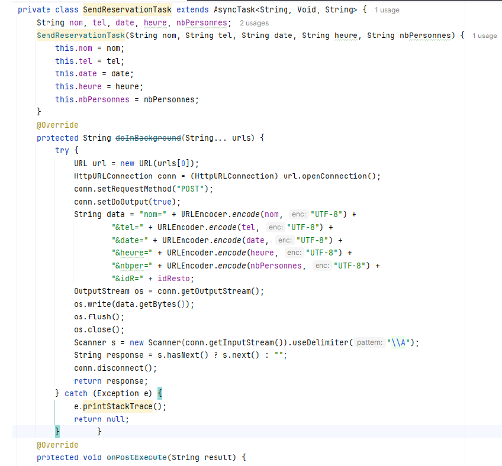

Dans le cadre du Projet 2 Android – Itération 3, j’ai réalisé le Ticket 4 qui consiste à permettre l’envoi d’une réservation depuis l’application Android vers l’API.
Ce développement a été effectué sur la branche iteration3_ticket4. L’objectif était de récupérer les informations saisies par l’utilisateur et de les transmettre au serveur via une requête HTTP.
Cette activité hérite de la classe Activity et contient plusieurs composants :
Dans la méthode onCreate(), le layout activity_reservation.xml est chargé. L’objet Restaurant est récupéré depuis l’activité précédente via getIntent().getSerializableExtra().
Si aucun restaurant n’est transmis, un message d’erreur est affiché à l’utilisateur et l’activité est fermée. Dans le cas contraire, l’identifiant du restaurant est stocké afin d’être envoyé à l’API lors de la réservation.
La méthode reserverRestaurant() est déclenchée lorsque l’utilisateur clique sur le bouton « Réserver ». Elle récupère les valeurs saisies dans les champs et vérifie que tous les champs sont remplis.
Si un champ est vide, un message d’erreur est affiché via un Toast et la réservation n’est pas envoyée. Sinon, l’heure et les minutes sont combinées au format HH:mm, puis les données sont envoyées au serveur.
L’envoi de la réservation est effectué par la classe interne SendReservationTask, qui hérite de AsyncTask. Cela permet d’exécuter la requête HTTP en arrière-plan afin de ne pas bloquer l’interface utilisateur.
Les données sont envoyées via une requête HTTP POST en utilisant HttpURLConnection. La réponse du serveur est ensuite lue et affichée à l’utilisateur grâce à un message Toast.
Objectif : Vérifier l’envoi d’une réservation depuis l’application Android.